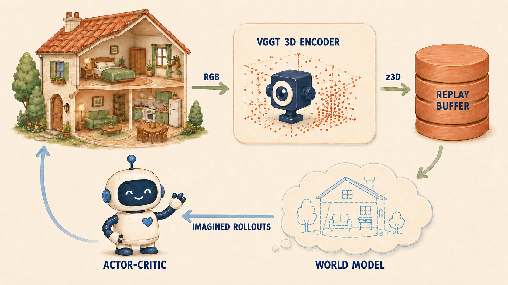
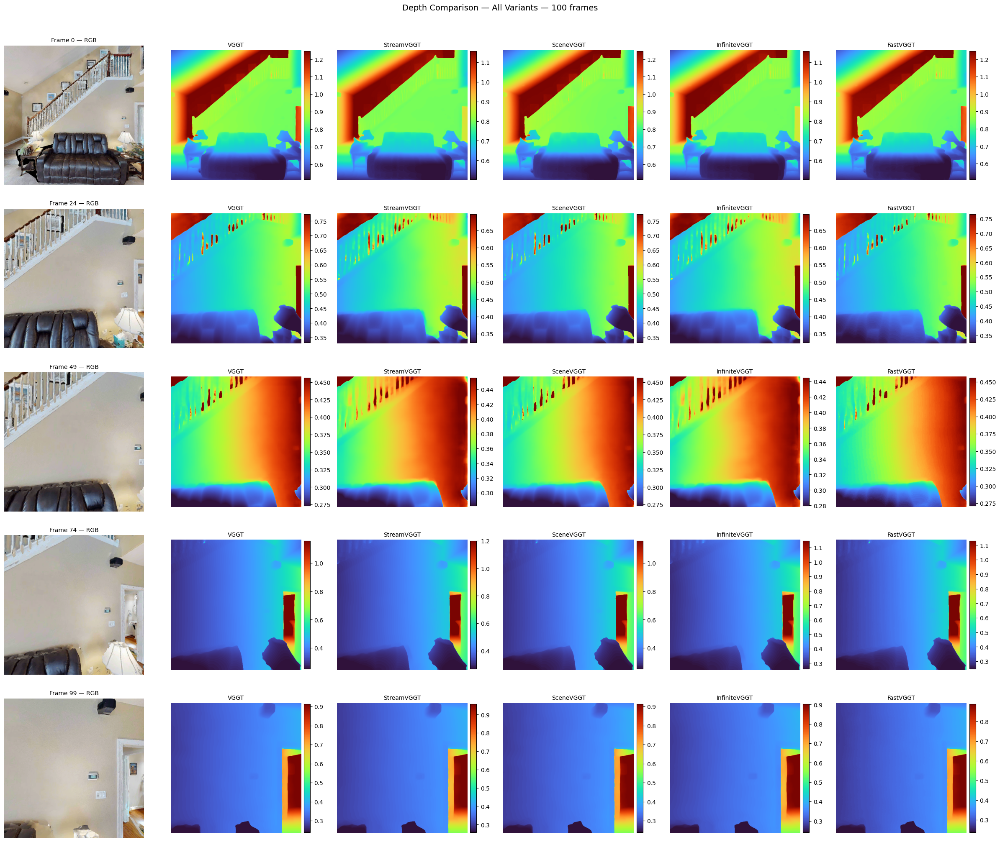

VGGT exploration results + thesis approach — augmenting VLAs with dense 3D semantic features
VGGT3D Scene UnderstandingObjectNav
UNITE
What Is UNITE?
Fig 1 from Koch et al. (2025) — UNITE takes posed images and outputs a semantically rich 3D point cloud.
Takes a set of RGB images → reconstructs the full 3D scene → labels every 3D point with what it is, which object it belongs to, and how it moves.
Key Properties
Works from RGB only — no depth sensor needed
Single forward pass, a few seconds per scene
Outputs are language-queryable (CLIP-aligned)
Instance-level segmentation in 3D
Per-Point Output
3D coordinates — geometry
CLIP features — open-vocabulary semantics
Instance ID — object grouping
Articulation vector — how parts move
UNITE
How It Works
Fig 2 from Koch et al. (2025) — Architecture overview
1. Input
Set of RGB images from different viewpoints of the same scene
2. Backbone (VGGT)
Pre-trained vision transformer encodes images, fuses across views via attention → predicts 3D geometry
3. Semantic Heads (DPT)
Task-specific DPT heads on shared backbone predict semantics, instances, and articulation per point
4. Output
Dense 3D point cloud where each point has: coordinates, CLIP features, instance ID, articulation vector
Foundation
VGGT: Visual Geometry Grounded Transformer CVPR 2025 Best Paper
Fig 2 from Wang et al. — Alternating global/frame-wise attention (no frame index embedding needed).
Result Demo:
Parameter Breakdown (1.26B total)
Aggregator
909M
72.4%
Camera Head
216M
17.2%
Depth Head
33M
2.6%
Point Head
33M
2.6%
Track Head
66M
5.2%
Inference: 2.37s/frame (MPS)64× A100 training
Depth (plasma) + confidence (viridis) — 5 views
PCA-RGB backbone features — 5 frames
Research Question
Can 3D scene understanding improve world models for navigation?
VGGTDPT DepthCLIP Semantics+ DreamerV3 RSSM
Hypothesis
Replacing DreamerV3's CNN encoder with frozen VGGT + DPT features gives the world model an explicit geometric and semantic prior — leading to better sample efficiency and navigation success on HM3D ObjectNav.
Standard DreamerV3 learns all 3D structure implicitly from 2D pixels. We provide it directly via a frozen VGGT backbone.
Background
DreamerV3 — Recurrent State-Space Model (RSSM)
World Model (RSSM)
Deterministic — GRU carries long-range memory via \(h_t\)
Geometry implicit in features (not coords) — no compression bottleneck
Compatible with later semantic-DPT add-on
Papers consuming the aggregator (not the heads)
Paper
What it uses
VGGT-DP(Ge et al. 2025)
aggregator tokens → diffusion policy
VGGT-World(Sun et al. 2026)
autoregressive on aggregator features
eVGGT(Vuong et al. 2025)
distilled aggregator for ACT / DP
MG-Nav(Wang et al. 2025)
aggregator-side memory for navigation
All four downstream-policy / world-model works skip the WP+CP readout and feed raw aggregator tokens forward.
Research question: Recent VGGT-based policies all consume aggregator embeddings rather than head outputs. I want to understand what changes in DreamerV3 when the encoder switches from the WP+CP readout to the raw aggregator tokens — sample efficiency, representation collapse, downstream SR/SPL.
Methodology
Offline Learning — Fair Encoder Comparison

Training loop — rollouts in HM3D are encoded by the frozen VGGT and stored as z3D in the replay buffer. The world model trains on cached embeddings; the actor-critic learns from imagined rollouts and steps back into the house.
Why offline? Removes VGGT extraction throughput as a confounder. Each variant trains on identical observation sequences — only the representation changes.
Result: Only InfiniteVGGT guarantees bounded memory at arbitrary episode lengths while maintaining stable throughput (~15 fps).
Encoder Selection
Output Quality — All Variants Equivalent

Depth maps from all five variants on identical input frames — outputs are visually indistinguishable.
Selection: InfiniteVGGT selected as 3D encoder — bounded memory, stable throughput, no quality loss.
Benchmark
ObjectNav Task
Task Definition
Agent spawns at random pose in an unseen environment. Given a target object category (e.g., "chair"), navigate to any instance and call STOP within 0.1m.
Observations (Egocentric)
RGB
224×224 egocentric
Depth
224×224 egocentric
GPS+Compass
Relative to start pose
Goal
Category ID (1 of 6)
Action Space
MOVE_FORWARD 0.25mTURN_LEFT 30°TURN_RIGHT 30°STOP
Episode budget: 500 steps max. Success = STOP called within 0.1m of any target instance.
Habitat ObjectNav — agent navigates to target object in photorealistic 3D scan
Key Metrics
Metric
Measures
Success Rate
Did agent find the target?
SPL
Success weighted by path efficiency
SoftSPL
Progress toward goal (partial credit)
DTG
Distance to goal at episode end
No map, no oracle: Agent has zero prior knowledge of the environment. Must build spatial understanding from egocentric observations alone.
Benchmark
HM3D Environment & Episode Distribution
HM3D Dataset
1,000 real-world 3D scans of residential spaces
Photorealistic rendering via Habitat simulator
216 object categories with semantic annotations
Multi-room layouts: kitchens, bedrooms, bathrooms, living rooms, hallways
Standard benchmark since 2023 Habitat Challenge
6 Target Object Categories
🪑
Chair
🛏️
Bed
🪴
Plant
🚽
Toilet
📺
TV Monitor
🛋️
Sofa
What's in the Environment
Realistic clutter: furniture, appliances, decorations, doors, stairs. Scenes contain 50–300+ objects per scan. Agent must distinguish target from distractors in cluttered, multi-room layouts with varying lighting and occlusion.
Geodesic Distance Distribution
Shortest navigable path from spawn to nearest target instance (HM3D ObjectNav v2 val split)
Why geodesic distance matters: Most episodes require navigating 3–7m through multiple rooms. This is where 3D spatial understanding becomes critical — the agent must reason about room connectivity and navigate around obstacles, not just recognize objects.
Baseline
DreamerV3 — Pixel-Only World Model
RGB (224×224)
→
CNN Encoder
→
RSSM World Model
→
Actor-Critic
→
Nav Action
DreamerV3 — Pixel-Only
Baseline · JAX · 2M steps
Standard CNN encoder on 2D RGB only
Learns geometry implicitly from pixels — no depth, no 3D, no semantics
State-of-the-art general RL agent (150+ tasks, Nature 2025)
First application to HM3D ObjectNav (no prior work)
Same RSSM architecture as our approach — only encoder differs
CNN baseline episode — cnn-2M-512 agent on L1 chair-only
Our approach: keeps DreamerV3's RSSM unchanged but replaces the CNN encoder with frozen VGGT features — providing explicit 3D geometry the pixel-only baseline lacks.
Results So Far
Curriculum Scaling — What Happens When We Add Complexity?
All levels: ~8,333 episodes per (house × goal) combination — train / val split 90 / 10.
Key insight: The semantic floor plan reveals that object accessibility — not distance — determines success. Goals behind walls/doorways (Geo/Euc > 1.3) are near-impossible for the 2D-only agent. This motivates 3D scene understanding.